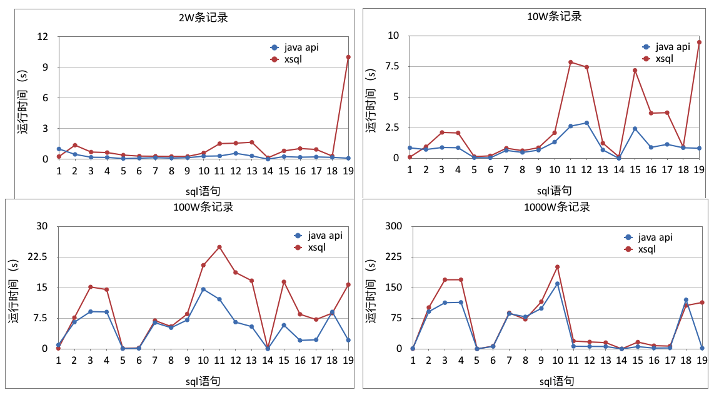

HBase性能测试报告
HBase的性能测试报告主要是基于TPCDS的性能测试报告。
测试环境
操作系统： CentOS release 6.2 (Final)
虚拟机版本： Java HotSpot(TM) 64-Bit Server VM (build 25.60-b23, mixed mode)
测试机器： client01v.qss.zzzc.qihoo.net、clientadmin.dfs.shbt.qihoo.net
XSQL配置：
- Driver Memory：5G
基于TPCDS的性能测试报告
测试目标
本次测试涵盖性能测试与功能测试，旨在对比XSQL下推与hbase java api的性能表现。
测试数据集
- 数据量一：2W条
- 数据量二：10W条
- 数据量三：100W条
- 数据量四：1000W条
测试语句集
| 序号 | sql内容 |
|---|---|
| 1 | select * from geonames where latitude = '40' |
| 2 | select * from geonames where dem <= 1000 and dem > 990 |
| 3 | select * from geonames where dem < 1000 and dem > 990 |
| 4 | select * from geonames where geoname_id in ('11110175','10099012') |
| 5 | select * from geonames where geoname_id like '111101%' |
| 6 | select * from geonames where geoname_id like '%682' |
| 7 | select * from geonames where geoname_id like '%9954%' |
| 8 | select * from geonames where name like 'Suh%' |
| 9 | select * from geonames where timezone like '%ne' |
| 10 | select * from geonames where timezone like '%sia%' |
| 11 | select * from geonames where timezone not in ('Asia/Dubai','Asia/Yerevan') |
| 12 | select * from geonames where alternatenames is null |
| 13 | select * from geonames where geoname_id = '10054920' and admin1_code is null |
| 14 | select * from geonames where alternatenames is not null |
| 15 | select name from geonames where longitude is not null |
| 16 | select geoname_id from geonames |
| 17 | select geoname_id from geonames where geoname_id like '%397' |
| 18 | select count(*) from geonames where alternatenames is not null |
测试结果汇总

结论
- 对于查询结果少于2万的sql，xsql查询与传统的hbase java api相比，性能损失在1s之内。
- 对于查询结果达数10万的sql，xsql的性能损失以每1万/延迟0.5s的增长（见图中sql语句10、11、12、13和15、16、17）。
- xsql在范围过滤时为了应对负数的干扰，使用了更规范的限界过滤，导致执行时间翻倍（见图中sql语句3、4）。